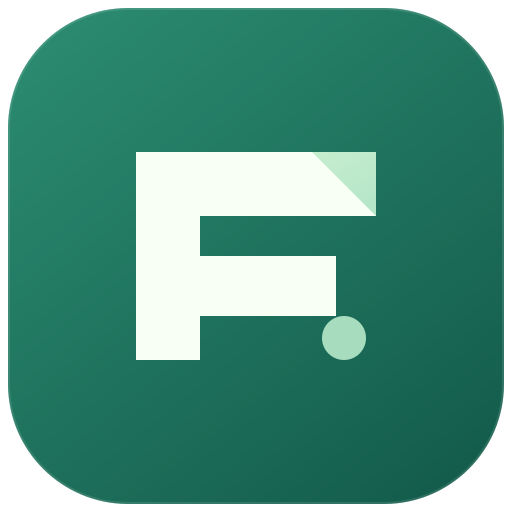

Fits your desktop.
WinUI 3 on Windows. The Linux development build adds GTK/libadwaita on GNOME and Kirigami on KDE, sharing one Rust sync engine.

FileNodePreviewYOUR CLOUD, A LITTLE CLOSER
Bring your JMAP files to Windows and Linux. FileNode keeps a local copy in sync while you get on with your day.
LESS SETUP. MORE DOING.
Connect your JMAP Files account, choose a local folder, and sign in. FileNode creates a matching folder on your server. No remote paths to figure out.
C:\Users\you\Desktop/DesktopWinUI 3 on Windows. The Linux development build adds GTK/libadwaita on GNOME and Kirigami on KDE, sharing one Rust sync engine.
Conflicting edits keep both versions. Busy files can wait. Deletion sync is your choice, with recovery storage for older copies.
Set separate upload and download limits. Desktop power signals pause scanning and transfers during energy saving and sleep.
YOUR NEXT QUIET LITTLE UTILITY
FileNode is a preview. Start with a dedicated test folder and a compatible JMAP Files server.
Native WinUI interface. Extract the portable ZIP and start FileNode.
Windows downloadsx64 · Portable ZIP · Unsigned MSIX also availableNative GNOME and KDE interfaces are being prepared, with the shared sync core and CLI. Check release notes for included features.
Linux downloadsx86_64 · New development baseline: Debian 13The Store listing is being prepared. Portable downloads are available through GitHub Releases.
IN DEVELOPMENT · LINUX PREVIEW
The development build adds native GNOME and KDE interfaces and Files On-Demand through FUSE, with Nautilus and Dolphin actions. Download buttons point to the latest published release; these Linux additions are still in development.
Choose which folders to sync, exclude files you don’t need and control upload speed. FileNode shows you when a file needs attention.
JMAP WebSocket notifications trigger remote checks when supported, with polling as a fallback. Downloads resume after interruptions; uploads restart the affected file from the beginning.
See separate sync states for every folder, actionable file-size warnings and selectable error details. Diagnose failures through Windows Event Log or Linux journal/syslog. Deletions use the shared server trash.
A server that supports JMAP Files, such as a compatible Stalwart deployment. FileNode is a client for your server, not a hosted storage service. Browser sign-in depends on your server and identity provider configuration; app-password sign-in is also supported.
Full synchronization keeps ordinary local files. Files On-Demand uses Explorer on Windows and FUSE in the Linux development build. Pin files to cache them offline. Linux cloud folders remain mounted only while FileNode runs; cached contents are retained after quitting.
The Linux development build provides native GTK 4/libadwaita on GNOME and Qt 6/Kirigami on KDE. GNOME reopens FileNode from the application launcher; KDE uses its tray. Separate Nautilus and Dolphin extensions add availability and keep/free-space actions.
The current MSIX is unsigned and uses a development identity. It needs signing or trust configuration for normal installation. The portable ZIP is a separate download. Microsoft Store publication is not available yet.